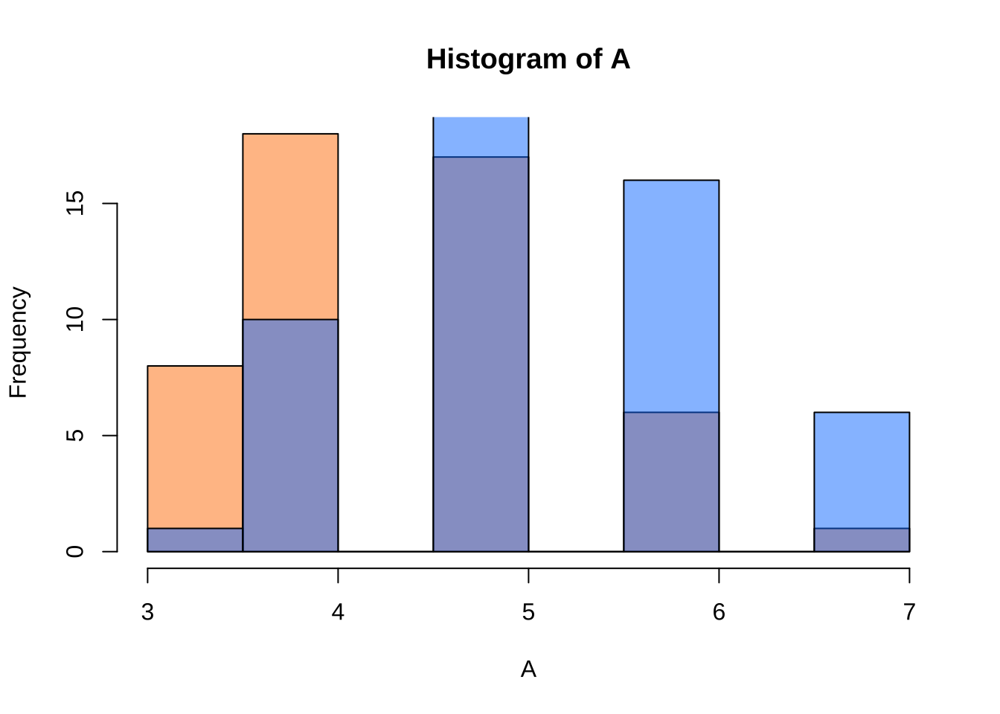
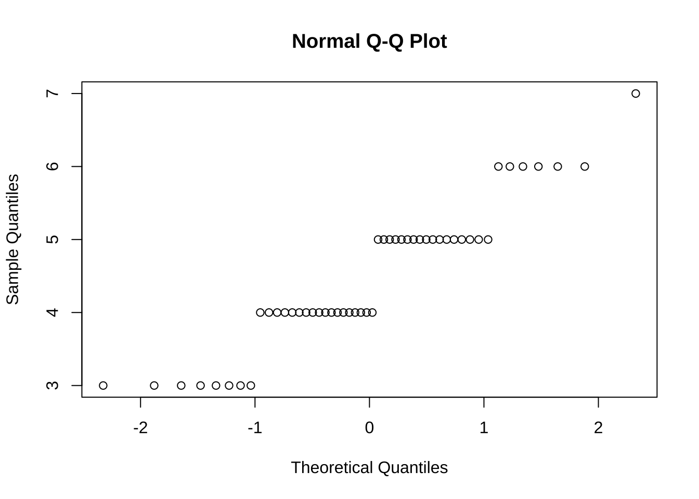
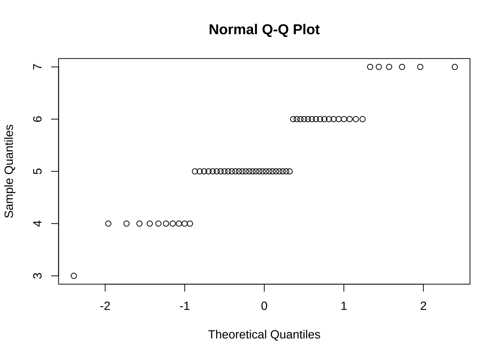

3 仮説検定
本章では, 仮説検定の中でも, 実務において, 恐らく最も良く用いると思われる,
- 平均値の差の検定
- 独立性の検定
について説明する. 独立性の検定と共通点のある
- 適合度検定
についても説明する.
3.1 平均値の差の検定
t検定は, Rで標準的に用意されている関数t.test()を用いて行う.
# t.test(x, y = NULL,
# alternative = c("two.sided", "less", "greater"),
# mu = 0, paired = FALSE, var.equal = FALSE,
# conf.level = 0.95, ...)
#
#
# One Sample t-test
# Performs one and two sample t-tests on vectors of data.平均値の差の検定 (ペア検定)
ペア検定を実施する場合には, t.test()の引数pairedを真 (TRUE, またはT)
に設定する. デフォルトは,paired = Fである (ペア検定ではない).
ここでは, Rにデフォルトで収録されているデータセットsleepを用いる.
データセット: sleep
sleep: 睡眠薬の効果を調べる実験データ
- 患者10名, 2種類の睡眠薬の比較 (コントロールに対する睡眠時間の増加分)
- (extra, group, ID) 20件, 患者(ID) 10名# help(sleep)
# Data which show the effect of two soporific drugs (increase in hours of sleep compared to control) on 10 patients.
head(sleep); tail(sleep)
#> extra group ID
#> 1 0.7 1 1
#> 2 -1.6 1 2
#> 3 -0.2 1 3
#> 4 -1.2 1 4
#> 5 -0.1 1 5
#> 6 3.4 1 6
#> extra group ID
#> 15 -0.1 2 5
#> 16 4.4 2 6
#> 17 5.5 2 7
#> 18 1.6 2 8
#> 19 4.6 2 9
#> 20 3.4 2 10最初に, Rへの指示を簡潔にするために, attach(sleep) を実行する. これにより, sleep内に含まれる変数extra,group,IDについては,
それらがsleepの変数であることをその都度教えてなくても, Rは理解できるようになる.
(Rの”サーチパス”に載せる, と言う)

両側検定, 片側検定は, 引数alternativeの値 (“two.sided”, “less”, “greater”) で指定する.
デフォルトはalteranative="two.sided", すなわち, 両側検定である.
# t.test(extra)
# 注) デフォルトはpaired = F (ペア検定ではない)
# 両側検定
t.test(extra[group == 1], extra[group == 2], paired = T)
#>
#> Paired t-test
#>
#> data: extra[group == 1] and extra[group == 2]
#> t = -4.0621, df = 9, p-value = 0.002833
#> alternative hypothesis: true mean difference is not equal to 0
#> 95 percent confidence interval:
#> -2.4598858 -0.7001142
#> sample estimates:
#> mean difference
#> -1.58片側検定は, 右側はalternative = "greater", 左側はalternative = "greater"で指定する.
# 片側検定
t.test(extra[group == 1], extra[group == 2], paired = T, alternative = "greater") # 片側 (右側) 検定)
#>
#> Paired t-test
#>
#> data: extra[group == 1] and extra[group == 2]
#> t = -4.0621, df = 9, p-value = 0.9986
#> alternative hypothesis: true mean difference is greater than 0
#> 95 percent confidence interval:
#> -2.293005 Inf
#> sample estimates:
#> mean difference
#> -1.58
t.test(extra[group == 1], extra[group == 2], paired = T, alternative = "less") # 片側 (左側) 検定)
#>
#> Paired t-test
#>
#> data: extra[group == 1] and extra[group == 2]
#> t = -4.0621, df = 9, p-value = 0.001416
#> alternative hypothesis: true mean difference is less than 0
#> 95 percent confidence interval:
#> -Inf -0.8669947
#> sample estimates:
#> mean difference
#> -1.58

平均値の差に関するt検定は, 二つの標本 \((x_1,x_2,...,x_{n_1})\), \((y_1,y_2,...,y_{n_2})\) の差\(\mu_1-\mu_2\)がゼロか否かを評価する統計的な手続きである (ここで, 未知の真の平均はそれぞれ, \(\mu_1\), \(\mu_2\)と表記する).
ペア検定は, さらに, この2標本のサイズが等しく (\(n_1=n_2\equiv n\)), しかも, 各々のデータ点がペア \((x_i,y_i)\) として扱える (“対応がある”) ような特別な場合である. 対応のあるケースの例としては, 同一の企業からデータを2種類, あるいは2時点について採取した場合である.
このようなペアのケースにおける平均値の差の検定は, 2標本のまま扱うのではなく, 各データ点ペアの差 \((x_i-y_i)\) を取ることで1標本に集約した上で, 1標本に対する平均値ゼロのt検定として行う.
すなわち, 帰無仮説\(H_0: \mu_1-\mu_2=0\)に対して, 対立仮説は,
- 両側検定: \(H_1: \mu_1-\mu_2=0\)
- 片側 (右側) 検定: \(H_1: \mu_1-\mu_2>0\)
- 片側 (左側) 検定: \(H_1: \mu_1-\mu_2<0\)
である. 上のsleepデータセットのケースにおいては, 標本平均の差
(\(\bar{x}_1-\bar{x}_2\))の大きさが\(-1.58\)であり, 対応する分散の大きさ
(上の結果では表示されていない) に比べて十分に小さい (帰無仮説であるゼロ
からマイナス方向に遠く離れている). その結果, 両側検定では,
p値は0.002833となり, 1%有意水準 (\(\alpha=0.01\)) でも帰無仮説は棄却される
こととなった.
一方, 対立仮説として, 右側 \(H_1: \mu_1-\mu_2>0\) を採用した場合には, 標本から計算される平均値の差は正の値となることが期待され ((\(\bar{x}_1-\bar{x}_2>0\))), これは, データセットsleepから計算された値 (\(-1.58\)) とは明らかに整合的ではない. このことは, 対応するp値が\(0.9986\)と 1に近く, 帰無仮説を棄却できない大きさとなっていることに表れている.
平均値の差の検定
ペアを構成しない一般の2標本の平均値の差に関するt検定においては, 2標本の持つ未知の分散の大きさが等しいかが問題になる.
t.test()のデフォルトでは等分散性が成立しない (var.equal = FALSE) 設定となっている.
この時は, Welch検定が実行される.
もちろん, 等分散性が成立する場合には, var.equalの値はTまたはTRUE
と指定せねばならない. この時は, 未知の分散はプール化された (“pooled”)
推定値を持ちいたt検定が行われる.
A/Bテストデータ (仮想データ)
デザイン A と B のどちらが平均的な購入意向を高めるか
- id, group (A:旧デザイン, B:新デザイン), purchase_intent (1--7)
- 標本サイズ: nA=50, nB=60abtest_df <- read.csv("purchase_1-7.csv", header = T)
boxplot(purchase_intent ~ group, data = abtest_df)
等分散性の検定は, var.test()を用いることができる
# 等分散性の検定 (F検定)
var.test(purchase_intent ~ group, data = abtest_df)
#>
#> F test to compare two variances
#>
#> data: purchase_intent by group
#> F = 1.1253, num df = 49, denom df = 59, p-value = 0.6606
#> alternative hypothesis: true ratio of variances is not equal to 1
#> 95 percent confidence interval:
#> 0.6592874 1.9472951
#> sample estimates:
#> ratio of variances
#> 1.125316
# ※ 省略されることも多いその上で, Welch検定か, プール化された分散推定値を用いるt検定を実行する.
# 等分散の場合 ((Pooled variance使用する) t検定)
t.test(purchase_intent ~ group, var.equal = T, data = abtest_df)
#>
#> Two Sample t-test
#>
#> data: purchase_intent by group
#> t = -4.3526, df = 108, p-value = 3.067e-05
#> alternative hypothesis: true difference in means between group A and group B is not equal to 0
#> 95 percent confidence interval:
#> -1.1449141 -0.4284192
#> sample estimates:
#> mean in group A mean in group B
#> 4.480000 5.266667
# 等分散でない場合 (Welch t検定)
t.test(purchase_intent ~ group, data = abtest_df)
#>
#> Welch Two Sample t-test
#>
#> data: purchase_intent by group
#> t = -4.3291, df = 101.99, p-value = 3.505e-05
#> alternative hypothesis: true difference in means between group A and group B is not equal to 0
#> 95 percent confidence interval:
#> -1.1470981 -0.4262352
#> sample estimates:
#> mean in group A mean in group B
#> 4.480000 5.266667自主課題: - Q. 以上の検定結果を解釈しなさい.
Q. 片側検定にするには? 対立仮説の方向はどちらか?
Q. 購入意向 (1-7) は順序尺度では?
正規分布を前提にしたt検定を使用して良いか?
正規性の確認方法
# ヒストグラム作成
A <- abtest_df[abtest_df$group == "A", "purchase_intent"]
B <- abtest_df[abtest_df$group == "B", "purchase_intent"]
hist(A, col = rgb(1, 0.5, 0, 0.5)); hist(B, col = rgb(0, 0.5, 1, 0.5), add = T)
# 正規性の検定
ks.test(A, "pnorm"); ks.test(B, "pnorm") # コルモゴロフ・スミルノフ (Kolmogorov-Smirnov) 検定
#>
#> Asymptotic one-sample Kolmogorov-Smirnov test
#>
#> data: A
#> D = 0.99865, p-value < 2.2e-16
#> alternative hypothesis: two-sided
#>
#> Asymptotic one-sample Kolmogorov-Smirnov test
#>
#> data: B
#> D = 0.99865, p-value < 2.2e-16
#> alternative hypothesis: two-sided
shapiro.test(A); shapiro.test(B) # シャピロ・ウィルク (Shapiro-Wilk) 検定
#>
#> Shapiro-Wilk normality test
#>
#> data: A
#> W = 0.89953, p-value = 0.0004638
#>
#> Shapiro-Wilk normality test
#>
#> data: B
#> W = 0.89262, p-value = 7.16e-05
qqnorm(A); qqnorm(B) # q-qプロット
なお, 関数ggplot()を使うことで, よりエレガントなプロットを描くことが出来る.
# install.packages("ggplot2") # 必要に応じてインストール
library(ggplot2)
ggplot(abtest_df, aes(x = purchase_intent, fill = group)) +
geom_histogram(position = "identity",
alpha = 0.5,
bins = 7, # ビンの数を適宜指定
color = "grey") + # 枠線の色 (任意)
scale_fill_manual(values = c("A" = "orange", "B" = "lightblue")) +
labs(title = "Histogram of Two Groups (Overlapped)",
x = "Purchase Intent (1-7)",
y = "Count") +
theme_minimal()
平均値の差の検定 (ノンパラメトリック検定)
Wilcoxonの順位和検定 (Mann–WhitneyのU検定)
ノンパラメトリック検定の一手法である
- 2群の中央値の差を調べる
- 外れ値に対して頑強
wilcox.test(purchase_intent ~ group, data = abtest_df)
#>
#> Wilcoxon rank sum test with continuity correction
#>
#> data: purchase_intent by group
#> W = 861.5, p-value = 5.992e-05
#> alternative hypothesis: true location shift is not equal to 0
# A,Bを定義しておいた場合, 以下の実行も可能
# wilcox.test(A, B)自主課題: - Q. 以上の検定結果を解釈しなさい.